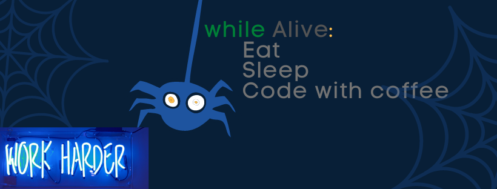

So are you new to the coding world? Ever wondered while playing a game like Assassin's Creed, what’s going on underneath the cool graphics and animation or got curious watching your friend doing cool stuffs with his/her PC by writing code language or if you have just stepped in the coding world by hearing an inspiring story about someone getting selected in Google Summer of Code or Hackathons or Code Jam(s) or if you are a non-CS/non-IT branch student and you are interested in Computers or Computer Science. Then you are at the right place! This blog contains all the bits and bytes of getting started with coding.
First of all, what is coding or as in general “programming”? Programming/coding is providing instructions to a computer to perform a certain task(s) or solve a problem in some programming language understandable by computers. We provide some input to the machine and an output is generated. Computers are low level (non-living) creatures that understand only Binary(language comprising 0’s and 1’s). We as a human know and understand high-level language(English, Hindi, Spanish,etc.)
So, how do we interact with computers or how do we provide instructions that are understandable by a computer? That’s where programming languages come into pictures. Programming languages understand intermediate languages between high and low levels. But you might be wondering if the computers only understand Binary then how they are gonna understand intermediate-level language?
Well, programming languages act as a translator between we humans and computers. A lot is going on underneath here too; conversion of intermediate-level language to machine code that is understandable by computers(Compilation) and then converting back the output to high level language so that humans can understand (Interpreter). But the good news is you don’t need to worry about how compilers work or how interpreters work if you are just getting started with coding because it’s a bit scary but if you are really interested to know more about them then Google it!.
You know what’s the good thing about coding? Anyone can learn coding!! It doesn’t require any prerequisite knowledge or you don’t need to belong to the IT/CS branch. Coding is open for everyone.
So the main question is “How do we get started with coding/programming?” Keep reading till the end and you’ll know it :-).
To be honest, when I, myself started coding I didn’t like it at all. Because the teacher in my college made the subject so boring that I started hating it. But I had to learn it cause it was in my course. So I tried to learn from the book but couldn’t understand much. I even tried Youtube but I didn’t find them interesting.
Then I reached out to one of my seniors in college and he suggested a course to me CS50: Introduction to computer science. This is an introductory course on Computer Science(programming) provided by Harvard University freely and taught by Harvard’s only David J. Malan. And now I’m gonna suggest this course to you. It is the best “free” course you’ll ever find over the internet. The concepts are explained in real-time and you’ll just love the way David J. Malan teaches. And to test your concepts they have problem sets specially designed for you by CS50’s team at Harvard and to be honest, some of the problems are tough. The problem sets contain real-world problems like looking for the person in the database with matching gene sequence(STR count) or who will win an election by applying some algorithms or checking if the credit card used by you is valid or fake.
It took me 2-3 days to solve almost more than 50% of the problems but even if you are not able to solve them in 2-3 days. Don’t Give Up! Go through the lecture and walkthrough again as many times you need but the most important thing is don't copy solutions from somewhere else and submit it. If you are gonna do that then coding is not your cup of tea. You’ll feel frustrated many times in starting because it’s said “The starting is the toughest” but you’ll get comfortable with time. Practicing is the key concept here. Practice until you get the hang of the concept. And eventually you’ll be able to solve it. The feeling after being able to run the code without any errors is amazing, trust me. And I’ll mention some of the really good practicing platforms at the end. After finishing the course there’s a reward for you. You’ll get CS50x free certificate too and all the code and sweat will pay off. And then you can show off your certificate on LinkedIn.
There’s another course freely available over the internet which is also really good. This course is provided by Princeton University on Coursera, Computer Science: Programming with a Purpose. But it’s a bit different from the above-mentioned CS50x course. In this course, you’ll learn programming through Java and CS50x course starts with C and goes through Python and SQL. And by the way Java, C, Python, and SQL are few of the 100’s of programming languages available out there in the world.
You can use Youtube (MITOCW has provided many series on programming)for learning if you are comfortable with that. I’ll strongly recommend the CS50x course because according to me it's the best one out there for beginners. If you want to learn all languages C, Python and Java i’ll recommend you first completing the CS50x course and then completing the Computer Science: Programming with a Purpose course. If you are confident that you can give time to both then do both courses side by side. If you don’t wanna study C language programming and want to learn Python then you can take some other courses on Coursera like Python for everybody (I haven’t taken this course but the ratings are really good) or if you wanna learn Java then go for Computer Science: Programming with a Purpose course. All of these courses have amazing content and problems. Solve them on your own. You can take help with a friend or search about a concept on Google but I strongly recommend not copying the solutions from GitHub, Stack overflow, or from somewhere else.
These courses are of beginner level. If you want to know more about what to do next after completing this course or how to get started with competitive coding then stay tuned for my next Blog...